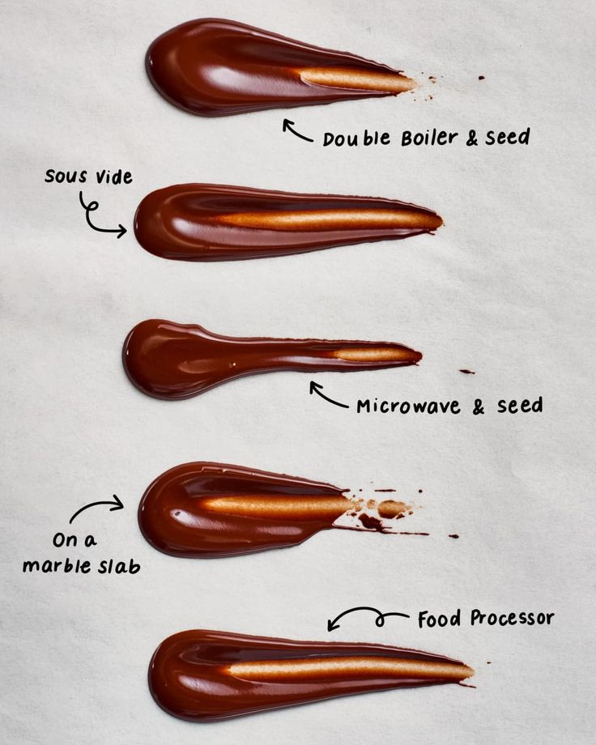
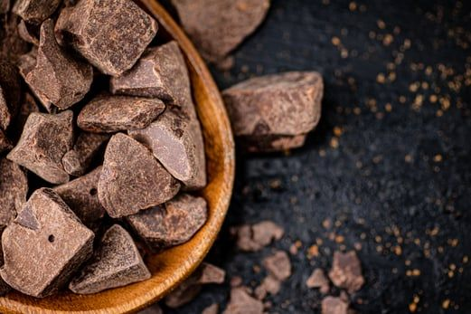

Learn the Basics of Chocolate Tempering
Chocolate tempering is a crucial technique for creating professional-looking chocolate decorations and confections. It involves carefully heating and cooling chocolate to stabilize it for making candies and coatings. Properly tempered chocolate has a glossy finish, a firm snap, and a smooth texture.
Why Temper Chocolate?
Tempering chocolate helps ensure that it sets properly and has a beautiful sheen. Untempered chocolate can become dull, develop a white coating (bloom), and have a soft texture that is not desirable for chocolate confections.
Steps to Temper Chocolate
- Chop the Chocolate: Start by chopping your chocolate into small, even pieces to ensure uniform melting.
- Heat the Chocolate: Place two-thirds of the chopped chocolate in a heatproof bowl over a pot of simmering water (double boiler). Stir gently until melted and reaches a temperature of about 110°F (43°C).
- Add Remaining Chocolate: Remove the bowl from heat and add the remaining one-third of the chopped chocolate. Stir continuously until the chocolate cools to about 88°F (31°C) for dark chocolate, or 86°F (30°C) for milk and white chocolate.
- Test the Temper: To check if the chocolate is tempered, dip a piece of parchment paper into the chocolate. It should set quickly and have a shiny finish.
- Use Immediately: Once tempered, use the chocolate for dipping, molding, or decorating as desired.
Tips for Successful Tempering
- Always use a thermometer to monitor the temperature accurately.
- Make sure no water gets into the chocolate, as it can cause it to seize.
- Work in a cool environment to prevent the chocolate from melting too quickly.
Conclusion
With these simple steps, you can master the art of chocolate tempering and create stunning chocolate decorations at home. Happy tempering!